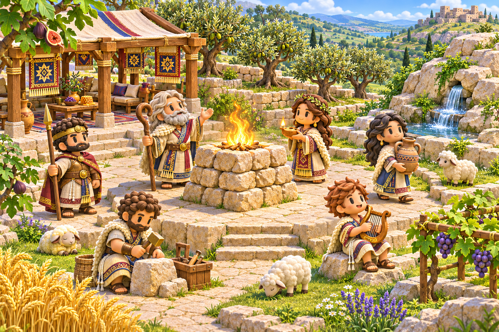
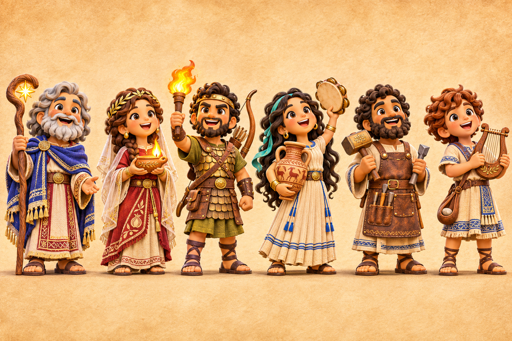

Bethel
Day 7 · The covenant camp
Your household
Six callings. One shared journey.

AbrahamPatriarch
SarahMatriarch
EliezerCommander
Spring SeerWater keeper
Master ArtisanBuilder
Shepherd PoetMusician

Day 7 · The covenant camp
Six callings. One shared journey.
